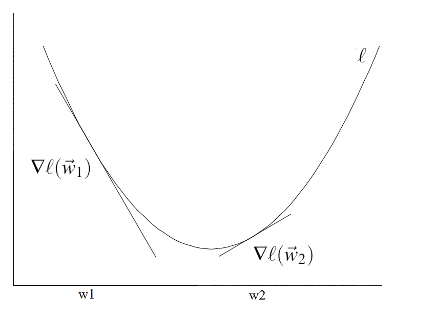
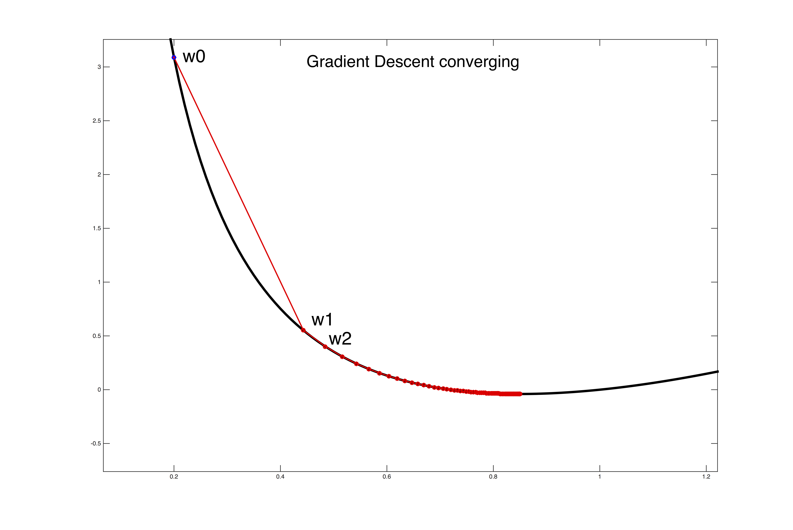
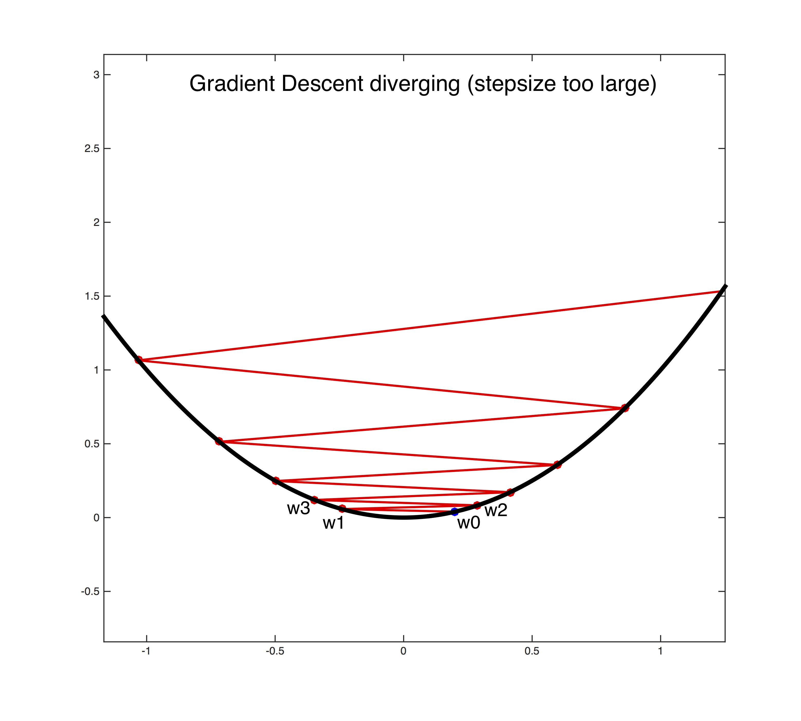
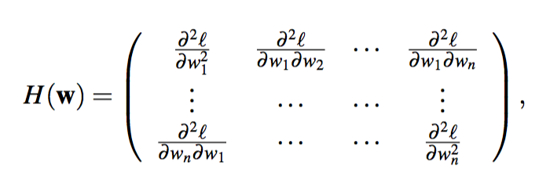
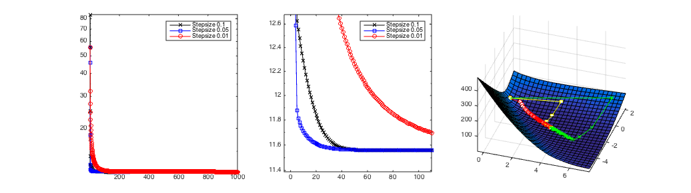
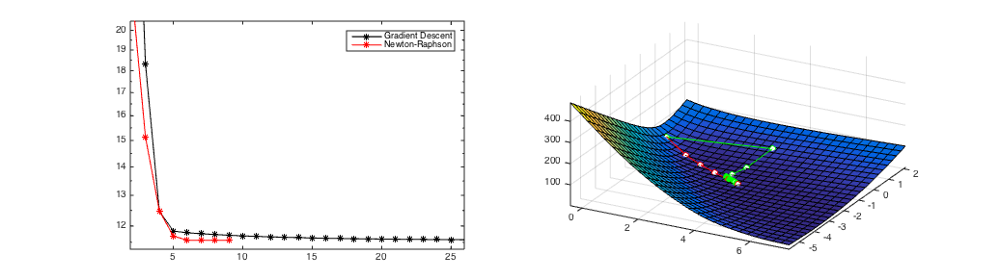
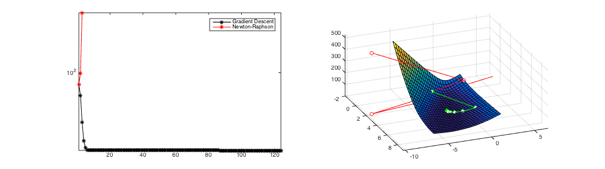
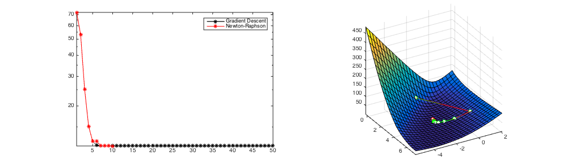

Gradient Descent (and Beyond)
We want to minimize a convex, continuous and differentiable loss function $\ell(w)$.
In this section we discuss two of the most popular "hill-climbing" algorithms, gradient descent and Newton's method.
Algorithm:
Initialize $\vec{w}_0$
Repeat until converge:
$\vec{w}^{t+1}$ = $\vec{w}^t$ + $\vec{s}$
If $\|\vec{w}^{t+1}$ - $\vec{w}^t\|_2$ < $\epsilon$, converged!
Trick: Taylor Expansion
How can you minimize a function $\ell$ if you don't know much about it? The trick is to assume it is much simpler than it really is. This can be done with Taylor's approximation. Provided that the norm $\|\vec{s}\|_2$is small (i.e. $\vec{w}$ + $\vec{s}$ is very close to $\vec{w}$), we can approximate the function $\ell(\vec{w} + \vec{s})$ by its first and second derivatives:
$\ell(\vec{w} + \vec{s})$ $\approx$ $\ell(\vec{w})$ + $g(\vec{w})$ $^\top$ $\vec{s}$
$\ell(\vec{w} + \vec{s})$ $\approx$ $\ell(\vec{w})$ + $g(\vec{w})$ $^\top$ $\vec{s}$ + $\frac{1}{2}$$\vec{s}^\top H(\vec{w})\vec{s}$
Here, $g(\vec{w})=\nabla\ell(\vec{w})$ is the gradient and $H(\vec{w})=\nabla^{2}\ell(\vec{w})$ is the Hessian of $\ell$. Both approximations are valid if $\|\vec{s}\|_2$ is small, but the second one assumes that $\ell$ is twice differentiable and is more expensive to compute but also more accurate than only using gradient.
Gradient Descent: Use the first order approximation
In gradient descent we only use the gradient (first order). In other words, we assume that the function $\ell$ around $\vec{w}$ is linear and behaves like $\ell(\vec{w}) + g(\vec{w})^\top\vec{s}$. Our goal is to find a vector $\vec{s}$ that minimizes this function. In steepest descent we simply set
$\vec{s}$ = -$\alpha$ $g(\vec{w})$,
for some small $\alpha$>0. It is straight-forward to prove that in this case $\ell(\vec{w}+\vec{s})<\ell(\vec{w})$.
$\underset{after\ one\ update}{\underbrace{\ell(\vec{w} + (-\alpha\vec g(\vec{w}))}} \approx \ell(\vec{w}) - \underset{>0}{\underbrace{\alpha\overset{>0}{\overbrace{\vec g(\vec{w})^T\vec g(\vec{w})}}}} < \underset{before}{\underbrace{\ell(\vec{w})}}$

Setting the learning rate $\alpha$>0 is a dark art. Only if it is sufficiently small will gradient descent converge (see the first figure below). If it is too large the algorithm can easily diverge out of control (see the second figure below). A safe (but sometimes slow) choice is to set $\alpha$= $\frac{1}{t}$, which guarantees that it will eventually become small enough to converge (for any initial value $t_0$>0).


Adagrad
One option is to set the step-size adaptively for every feature. Adagrad keeps a running average of the squared gradient magnitude and sets a small learning rate for features that have large gradients, and a large learning rate for features with small gradients. Setting different learning rates for different features is particularly important if they are of different scale or vary in frequency. For example, word counts can differ a lot across common words and rare words.
Adagrad Algorithm:
Initialize $\vec w_0$ and $\vec z$: $\forall d$: $w^0_d=0$ and $z_d=0$
Repeat until converge:
$\vec{g}=\frac{\partial f(\vec{w})}{\partial \vec{w}}$ # Compute gradient
$\forall d$: $z_{d}\leftarrow z_{d}+g_{d}^2$
$\forall d$: ${w}_d^{t+1}\leftarrow {w}_d^t-\alpha \frac{{g}_d}{\sqrt{{z}_d+\epsilon}}$
If $\|\vec{w}^{t+1}$ - $\vec{w}^t\|_2$ < $\delta$, converged! # for some small $\delta>0$.
Newton's Method: Use 2nd order Approximation
Newton's method assumes that the loss $\ell$ is twice differentiable and uses the approximation with Hessian (2nd order Taylor approximation).
The Hessian Matrix contains all second order partial derivatives and is defined as

and, because the convexity of $\ell$, it is always a symmetric square matrix and positive semi-definite.
Note: A symmetric matrix $\mathbf{M}$ is positive semi-definite if it has only non-negative eigenvalues or, equivalently, for any vector $\vec{x}$ we must have $\vec{x}^\top\mathbf{M}\vec{x}\geq 0$.
It follows that the approximation
$\ell(\vec{w} + \vec{s})$ $\approx$ $\ell(\vec{w})$ + $g(\vec{w})$ $^\top$ $\vec{s}$ + $\frac{1}{2}$$\vec{s}^\top H(\vec{w})\vec{s}$
describes a convex parabola, and we can find its minimum by solving the following optimization problem:
$\underset{s}{argmin}$ $\ell(\vec{w})$ + $g(\vec{w})$ $^\top$ $\vec{s}$ + $\frac{1}{2}$$\vec{s}^\top H(\vec{w})\vec{s}$
To find the minimum of the objective, we take its first derivative and equate it with zero and solve for $\vec{s}$,
0 = $g(\vec{w}) + H(\vec{w})\vec{s}$
$\Rightarrow$$\vec{s}$= $-[H(\vec{w})]^{-1}g(\vec{w})$.
This choice of $\vec{s}$ converges extremely fast if the approximation is sufficiently accurate. Otherwise it can diverge. This is typically the case if the function is flat or almost flat with respect to some dimension. In that case the second derivatives are close to zero, and their inverse becomes very large - resulting in gigantic steps.
Best practices
1. The matrix $H(\vec{w})$ scales $d\times d$ and is expensive to compute. A good approximation can be to only compute its diagonal entries.
2. To avoid divergence of Newton's method, a good approach is to start with gradient descent (or even stochastic gradient descent) and then finish the optimization Newton's method. Typically, the second order approximation, used by Newton's Method, is more likely to be appropriate near the optimum.

Gradient descent with different step-sizes. The left and middle plots show the losses as a function of the number of iterations. The right plot shows the path of the weight vector $\vec{w}^t$ over time. The middle image shows the loss zoomed in around the left bottom corner. In this case the steps-size of $\alpha$=0.5 (blue line left and yellow right) converges the fastest.

Figure 1
(a) A starting point where Newton's Method converges in 8 iterations.

Figure 2
(b) A starting point where Newton's Method diverges.

Figure 3
(c) same starting point as in Figure 2, however Newton's method is only used after 6 gradient steps and converges in a few steps.
A comparison of Newton's Method and Gradient Descent. Gradient Descent always converges after over 100 iterations from all initial starting points. If it converges (Figure 1), Newton's Method is much faster (convergence after 8 iterations) but it can diverge (Figure 2). Figure 3 shows the hybrid approach of taking 6 gradient descent steps and then switching to Newton's Method. It still converges in only 10 updates.